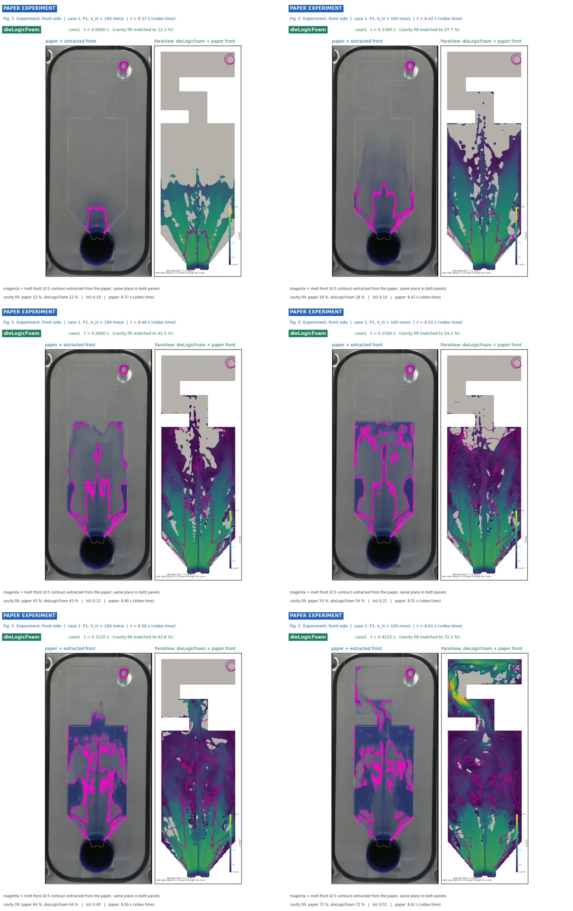
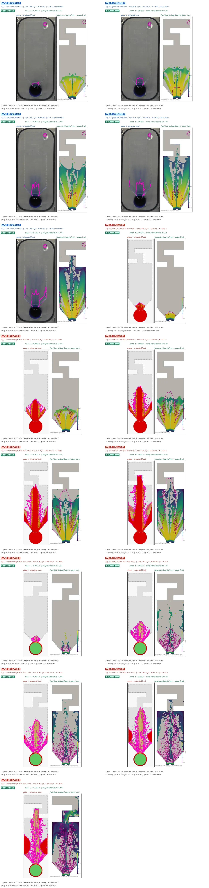
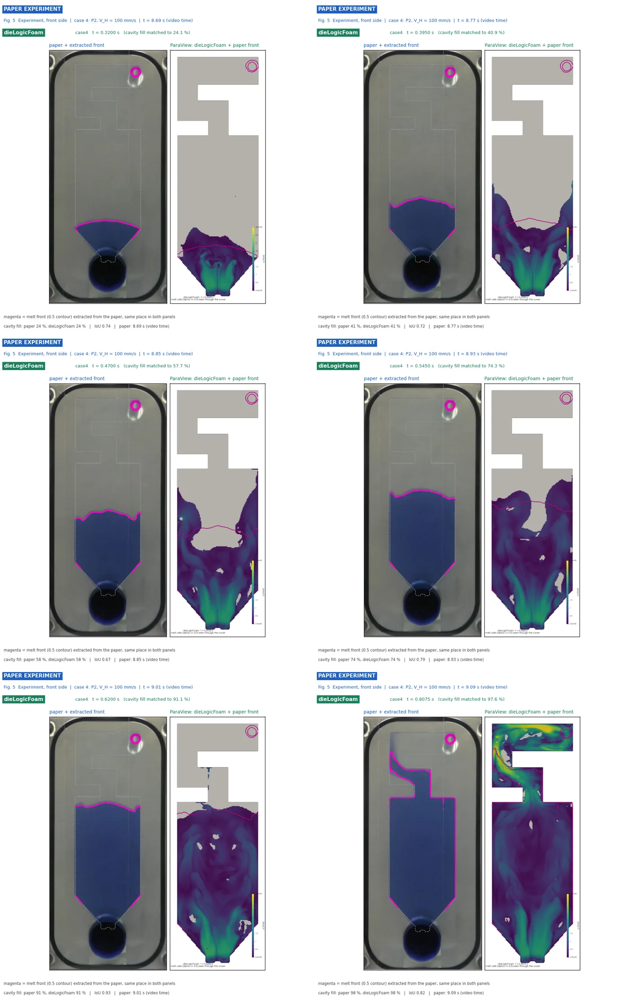
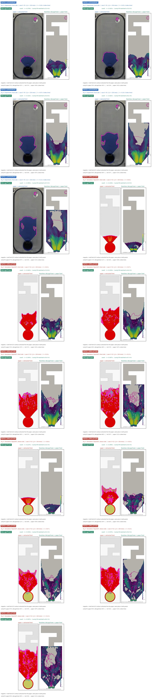

1. Versuch
A. Niida, Y. Maeda, Materials Transactions 61 (2020) 1364. Eine Gießkammer aus Acryl (Ø 50 mm, 262 mm lang, Gießbüchse konisch 50 auf 57 mm über 40 mm) füllt eine senkrechte Platte, 100 × 150 × 5 mm mit einem Trichter zum Anschnitt (nach der Zeichnung 22 mm breit, im Modell der Autoren rund 30 mm) und einem Überlauf mit Schlauch zum Eimer. 259 g Wasser, das sind 42,8 % Füllgrad. Der Kolben fährt mit 20 mm/s und schaltet auf 100, 150 oder 200 mm/s um: vor dem Anschnitt (P1) oder 5 mm danach (P2). Gefilmt von vorn mit 60 Bildern je Sekunde.
| Einstellung | Umschaltung | v hoch [mm/s] | Umschaltweg [mm] | Fotos |
|---|---|---|---|---|
case1 | P1 | 100 | 174,8 | Abb. 5 |
case2 | P1 | 150 | 174,1 | Abb. 7 |
case3 | P1 | 200 | 174,4 | nur Luftvolumen |
case4 | P2 | 100 | 180,7 | Abb. 5 |
case5 | P2 | 150 | 180,0 | Abb. 9 |
case6 | P2 | 200 | 179,2 | nur Luftvolumen |
2. Messgrößen
Neben den Fotos haben die Autoren aus den Videos das eingeschlossene Luftvolumen gemessen (Abb. 6), für alle
sechs Einstellungen über der Zeit seit dem Anschnitt. Die Kurven sind automatisch digitalisiert
(Symbole nach Form, Füllung und Grauwert erkannt) und liegen in paper/measurements/.
Die Aussage der Messung ist deutlich: bei P1 bedeckt das Wasser 0,13 s nach dem Anschnitt schon fast die
ganze Vorderwand, obwohl erst rund 20 cm³ Wasser im Hohlraum sind. Es läuft als dünner Film an der Wand.
Bei P2 füllt es die Platte von unten über die ganze Dicke.
3. Modell
Gerechnet wird ab dem Zeitpunkt, an dem Gießkammer und Gießbüchse voll sind (nach 175,72 mm Kolbenweg). Das Netz enthält die Platte mit Überlauf und Entlüftung, die Gießbüchse und 10 mm der Kammer bis zur Endlage des Kolbens; am Eintritt strömt das Wasser mit der Kolbengeschwindigkeit ein. Kartesisches Netz mit 1 mm, die Platte ist genau der Umriss des Modells.
Trichterboden und Anschnitt sind 30 mm breit. Aus der Zeichnung ergaben sich 22 mm; das Modell der Autoren
(sein Umriss ist in Abb. 7 und 9 zu sehen) und das Foto des vollen Hohlraums zeigen 30 bis 34 mm. Mit 30 mm
liegen alle Fotos und die Luftmessung näher am Versuch (Abschnitt 5), daher ist das seit dem 26.09.2026 die
Grundeinstellung. Die früheren Rechnungen mit 22 mm stehen als gate22_* in den Tabellen.
Turbulenz: RANS k-omega SST mit Wandfunktionen, seit dem 27.09.2026. Auf dem 30 mm breiten Anschnitt kam SST der gemessenen Luft bei P1 und P2 am nächsten und bei P2 auch den Fotos. Laminar mit 20-facher Zähigkeit trifft die Fotos bei P1 besser, schließt dort aber nur die Hälfte der gemessenen Luft ein (Abschnitt 5).
4. Ergebnisse
| Einstellung | Umschaltung, v hoch [mm/s] | Luft RMSE [cm³] | Luft am Ende gemessen / gerechnet [cm³] | Fotos: mittlere Abweichung | Fotos: IoU dick | Fotos: IoU nass | Massenbilanz der Fotos |
|---|---|---|---|---|---|---|---|
case1 | P1, 100 | 9,8 | 67,4 / 50,7 | 0,311 | 0,24 | 0,75 | 1,12 |
case2 | P1, 150 | 8,3 | 76,7 / 62,3 | 0,159 | 0,14 | 0,54 | 1,02 |
case3 | P1, 200 | 8,4 | 78,8 / 62,4 | keine Fotos | keine Fotos | keine Fotos | keine Fotos |
case4 | P2, 100 | 1,4 | 7,3 / 2,9 | 0,127 | 0,80 | 0,77 | 0,93 |
case5 | P2, 150 | 8,0 | 12,1 / 6,9 | 0,240 | 0,62 | 0,71 | 0,93 |
case6 | P2, 200 | 23,0 | 22,3 / 22,7 | keine Fotos | keine Fotos | keine Fotos | keine Fotos |
Grundeinstellung: Anschnitt 30 mm, k-omega SST, 1 mm. Luft: Abb. 6 der Quelle über die ganze Messung. Massenbilanz: Zuwachs des Wassers in den Fotos je verdrängtem Volumen des Kolbens (1 = stimmig).
Mit dem 30 mm breiten Anschnitt und SST liegt die eingeschlossene Luft in fünf der sechs Einstellungen
innerhalb von 10 cm³ (RMSE) an der Messung, mit dem 22 mm breiten Anschnitt waren es 11,5 bis 29 cm³ (drei Einstellungen gerechnet). Am besten
passt case4 (P2, 100 mm/s): Fotos IoU 0,80, Luft RMSE 1,4 cm³. Bei P1 schließt die Rechnung
am Ende 20 bis 25 % zu wenig Luft ein, die dicke Front steigt zu schnell. Bei P2 mit 200 mm/s
(case6) schießt der Strahl nach dem Umschalten durch das Becken und schließt sofort 33 bis
41 cm³ ein, gemessen sind bis 0,35 s nur 1 bis 6 cm³; erst am Ende stimmt die Luft wieder überein.
Der zu schnelle Strahl bei hoher Geschwindigkeit bleibt die offene Stelle (Abschnitt 5).
4.1 Eingeschlossene Luft

case1: eingeschlossene Luft über der Zeit, Messung der Quelle und Rechnungen (Bildverfahren der Quelle)
case2: eingeschlossene Luft über der Zeit, Messung der Quelle und Rechnungen (Bildverfahren der Quelle)
case3: eingeschlossene Luft über der Zeit, Messung der Quelle und Rechnungen (Bildverfahren der Quelle)
case4: eingeschlossene Luft über der Zeit, Messung der Quelle und Rechnungen (Bildverfahren der Quelle)
case5: eingeschlossene Luft über der Zeit, Messung der Quelle und Rechnungen (Bildverfahren der Quelle)
case6: eingeschlossene Luft über der Zeit, Messung der Quelle und Rechnungen (Bildverfahren der Quelle)4.2 Fotos

case1: Foto mit gemessener Front (magenta) neben der Rechnung in ParaView
case2: Foto mit gemessener Front (magenta) neben der Rechnung in ParaView
case4: Foto mit gemessener Front (magenta) neben der Rechnung in ParaView
case5: Foto mit gemessener Front (magenta) neben der Rechnung in ParaView5. Abstimmung
Die Grundeinstellung trifft das Wasservolumen im Hohlraum zu jedem Foto, verteilt es aber falsch. Bei P1 schießt der Strahl aus dem Anschnitt in 0,03 s bis zur Oberkante, im Versuch liegt die dicke Front nach 0,09 s erst bei 130 mm; das Wasser breitet sich dort über die Breite aus und läuft als dünner Film an der Vorderwand hoch. Bei P2 füllt der Versuch nach dem Umschalten ruhig von unten, die Rechnung spritzt durch das Becken bis nach oben.
Befund: Die Rechnung führt genau den Volumenstrom des Kolbens durch den Anschnitt
(301 gegen 294 cm³/s), aber als eingeschnürten Strahl: rund 13 mm breit mit 5 m/s statt über die 22 mm des
Anschnitts mit 2,7 m/s. Die Rechnung der Autoren (TopCAST, laminar) zeigt denselben schnellen Strahl. Die
Varianten prüfen, was den Strahl im Versuch aufweitet und bremst; alle an case2 bis 0,12 s, wo Fotos
und Luftmessung liegen:
hz05: 10 statt 5 Zellen über die Dicke. Keine Änderung: der dünne Film ist nicht die Ursache.film: Wandreibung für Filme dünner als eine halbe Zelle (neue OptionwallFilmFrictionin dieLogicFoam, Scherspannung eines laminaren Films $\tau = 3\mu\bar u/\delta$). Luftvolumen etwas näher, Strahl unverändert.les,sst: Turbulenzmodelle; der Strahl hat eine Reynolds-Zahl um $10^4$.nu20: laminar mit 20-facher Zähigkeit ($2\cdot10^{-5}$ m²/s), eine grobe Wirbelviskosität. Die Fotos liegen so nah wie bei keiner anderen Variante: mittlere Abweichung 0,140, nasse Fläche IoU 0,65. Der Strahl weitet sich auf und läuft als Film über die Breite, wie im Versuch. SST liefert im Wasser nur eine Wirbelviskosität von im Mittel $3{,}5\cdot10^{-6}$ m²/s: der Einlauf ist dort laminar und der Strahl nur wenige Zellen breit, das Modell baut die Turbulenz zu langsam auf. Eine Wirbelviskosität von $10^{-5}$ bis $10^{-4}$ m²/s ist für einen Strahl mit 3 m/s im Spalt von 5 mm plausibel.vf1: Leerzellen nicht schneller als die schnellste Schmelze (maxVoidVelocityFactor 1).gate30: Trichterboden und Anschnitt 30 statt 22 mm breit. Die Zeichnung der Quelle ergab 22 mm, das Modell der Autoren (Umriss in Abb. 7 und 9) und das Foto des leeren Hohlraums zeigen rund 30 mm bei z = 30 mm. Der Anschnitt hat damit 150 statt 110 mm² Querschnitt, der Strahl ist langsamer. Bisher die größte Verbesserung: Luftvolumen RMSE 10 200 statt 18 500 mm³, nasse Fläche IoU 0,49 statt 0,40. Die dicke Front erreicht aber weiterhin nach 0,04 s die Oberkante.p2_gate30: derselbe Anschnitt bei P2. Die Fotos liegen deutlich näher: mittlere Abweichung 0,30 statt 0,52, dicke Fläche IoU 0,51 statt 0,17, nasse 0,69 statt 0,45; Luft bis 0,42 s RMSE 19 statt 32 cm³. Damit wird der 30 mm breite Anschnitt die Grundeinstellung aller sechs Einstellungen.gate30_sst,p2_gate30_sst: auf dem neuen Anschnitt zusätzlich SST, die beste der Turbulenzvarianten. Bei P1 die beste Luftkurve bisher (RMSE 8,2 cm³), die Fotos nur wenig näher (0,168 statt 0,171): der Strahl bleibt schmal und schnell. Bei P2 dagegen deutlich näher: mittlere Abweichung 0,239 statt 0,303, dicke Fläche IoU 0,61 statt 0,51, Luft RMSE 9,0 statt 19,0 cm³.gate30_nu20,_nu50,_nu100: Abgleich einer konstanten wirksamen Zähigkeit auf dem neuen Anschnitt. Die Fotos werden mit 20-facher Zähigkeit deutlich besser (mittlere Abweichung 0,141 statt 0,171, nasse Fläche 0,63 statt 0,49), mit mehr nicht weiter (0,142, 0,145). Die eingeschlossene Luft sinkt dagegen mit jeder Stufe: nach 0,12 s gemessen 77 cm³, gerechnet 65 (laminar), 35, 31 und 23 cm³. Die Zähigkeit verteilt das Wasser in der Ebene richtig, füllt aber die ganze Dicke; im Versuch läuft es als Film an der Vorderwand und lässt Luft in der Dicke zurück.- Bei allen Varianten erreicht die dicke Front die Oberkante nach etwa 0,06 s, im Versuch steht sie dann bei 95 mm. Die Ablösung beim Umlenken aus der Gießbüchse gibt die Rechnung dabei wieder: 75 bis 93 % des Wassers liegen in der vorderen Hälfte der Dicke, bei 5 wie bei 10 Zellen. Das Wasser läuft also auch in der Rechnung als Film an der Vorderwand, aber zu schnell nach oben. Über dem Anschnitt steigt das Wasser in der Rechnung mit im Mittel 3,7 m/s (bei allen Varianten 3,5 bis 3,8 m/s), es füllt nur etwa die halbe Dicke. Der volle Querschnitt von 30 × 5 mm² ergäbe 2,0 m/s, und so schnell steigt im Versuch die nasse Front (115 mm nach 0,036 s, 215 mm nach 0,086 s). Im Versuch füllt das Wasser den Anschnitt also offenbar ganz, in der Rechnung schnürt es sich hinter der Kante auf der Seite der Kammer ein. Nächster Schritt: die Form dieser Kante (in den Quellen nicht bemaßt) und ein feineres Netz nur im Anschnitt.
p2_gate30_nu20: dieselbe Zähigkeit bei P2; 50- und 100-fach entfallen dort. Fast gleich wie SST: mittlere Abweichung 0,226 gegen 0,239, nasse Fläche 0,76 gegen 0,72, Luft RMSE 10,9 gegen 9,0 cm³.
Die langsame Phase bei P1. Die Grundeinstellung beginnt, wenn Gießkammer und Gießbüchse ganz
voll sind (175,7 mm Kolbenweg), mit leerer Platte und sofort mit $V_H$. Mit ebener Oberfläche erreicht das
Wasser aber den tiefsten Punkt des Anschnitts (21,5 mm über der Achse) schon bei 170,5 mm, die Oberkante der
Kammer (25 mm) bei 175,2 mm. Beim Umschalten in case2 (174,1 mm) steht es bei 23,8 mm: der
Anschnitt ist unten schon voll Wasser, oben an der Kammer liegt noch eine dünne Luftschicht von 3 cm³. In der
Rechnung ist genau dieser untere Teil des Anschnitts leer, hinter der Kante, an der sich der Strahl einschnürt.
p1_slow rechnet deshalb die ganze Kammer mit bewegtem Kolben ab 165 mm aus der Ruhe, mit 20 mm/s bis
zum Umschalten. Ergebnis: der Anschnitt füllt sich unten wie erwartet vor dem Umschalten, der Strahl danach ist
aber derselbe (3,7 m/s über die halbe Dicke, 85 % an der Vorderwand; Fotos 0,177 gegen 0,168, Luft RMSE 14 gegen
8 cm³). Die langsame Phase ist nicht die Ursache; die Einschnürung ist eine Folge der Form des Übergangs.
Tiefe des Anschnitts. Der Anschnitt reicht unter die Oberkante der Bohrung der Gießbüchse
(Φ57). Zuerst gemessen waren 7 mm; mit an den Kreis angepasstem Umriss (seine Oberkante liegt hinter den Bögen
des Anschnitts verdeckt) ergibt Abb. 4 etwa 10 mm, Abb. 1 8,4 bis 10,5 mm. Das Fenster, durch das das Wasser
aus der Büchse in die Platte tritt, ist damit 10 statt 7 mm hoch, gut 40 % mehr Fläche.
gate_deep und p2_gate_deep prüfen das (tiefster Punkt 18,5 statt 21,5 mm über der Achse).
Ergebnis bei P1 (case2 bis 0,12 s), verglichen mit der Grundeinstellung:
gate_deep: der Strahl füllt 97 statt 81 mm² des Anschnitts und steigt mit 3,0 statt 3,7 m/s; die dicke Front liegt nach 0,036 s bei 132 statt 169 mm (Versuch 66 mm). Fotos so nah wie bei keiner Variante zuvor: mittlere Abweichung 0,132, dicke Fläche IoU 0,25, nasse 0,63. Die Luft sinkt dagegen (am Ende 54 statt gemessen 77 cm³, RMSE 12,7 cm³).gate_ref05: 0,5 mm im Bereich von Büchse und Anschnitt. Der Strahl ist fast gleich (3,5 m/s), die Luft am nächsten an der Messung (RMSE 6,0 cm³), die dicke Fläche besser (IoU 0,23).gate_deep12: 12 mm, der Außenrand des Umrisses in Abb. 4. Keine weitere Verbesserung (Front 134 mm, Fotos 0,137, Luft RMSE 16,9 cm³): 10 mm, der gemessene Wert, bleibt.p2_gate_deep: bei P2 gleiche Fotos wie die Grundeinstellung (0,241 gegen 0,239, dicke Fläche 0,60 gegen 0,61), die Luft näher (RMSE 6,5 gegen 9,0 cm³), die Front nach dem Umschalten langsamer (191 statt 215 mm nach 0,335 s, Versuch 135 mm).- Die Form des Übergangs ist also der Hebel, das Netz wirkt zusätzlich auf die Luft. Zuletzt:
gate_deep_ref05undp2_gate_deep_ref05, 10 mm tiefer Anschnitt mit feinem Netz im Bereich des Anschnitts. Hält die Verbindung bei P1 und P2, wird sie die neue Grundeinstellung.
Aus den Zeiten der Fotos lassen sich Füllgrad und Länge der Kammer nicht sicher bestimmen. Liefe die Uhr der Videos ab dem Anlauf des Kolbens, wäre die Kammer in beiden Reihen mit 150 mm/s schon bei 167 bis 170 mm voll, 6 mm früher als aus 259 g, 262 mm und 40 mm folgt (entsprechend 44 statt 42,8 % Füllgrad oder einer um 6 mm kürzeren Kammer). Dieselbe Verschiebung ergibt aber schon ein Versatz der Uhr um 0,04 s, gut zwei Bilder bei 60 Bildern je Sekunde. Die Uhr in Abb. 5 läuft sicher nicht ab dem Anlauf: die Fotos bei P2 liegen dort schon alle in der schnellen Phase. Und bei 169 mm lägen alle P1-Umschaltpunkte der Tabelle 1 hinter dem Eintreffen des Wassers, gegen die Definition von P1 in der Quelle. Die Angaben der Quelle sind in sich stimmig und bleiben die Grundlage.
Entscheidung: Anschnitt 30 mm und k-omega SST werden die Grundeinstellung aller sechs Einstellungen. Die eingeschlossene Luft ist die einzige Messgröße für alle sechs, und SST ist ein physikalisches Modell statt einer angepassten Konstanten. Die Zeile „Grundeinstellung“ in den Tabellen unten ist ab jetzt diese Einstellung über die ganze Rechnung.
P1, case2
| Variante | Änderung | Fotos: mittlere Abweichung | Fotos: IoU nass | Fotos: IoU dick | Luft bis 0,12 s: RMSE [cm³] |
|---|---|---|---|---|---|
Grundeinstellung | Anschnitt 30 mm, k-omega SST, ganze Rechnung | 0,159 | 0,54 | 0,14 | 8,3 |
film | Wandreibung dünner Filme (wallFilmFriction) (Anschnitt 22 mm) | 0,186 | 0,39 | 0,13 | 15,3 |
gate22_case2 | Anschnitt 22 mm nach der Zeichnung, die frühere Grundeinstellung | 0,180 | 0,40 | 0,13 | 18,5 |
gate30 | Anschnitt 30 mm, jetzt die Grundeinstellung (Rechnung bis 0,12 s) | 0,171 | 0,49 | 0,11 | 10,2 |
gate30_nu100 | Anschnitt 30 mm, laminar, 100-fache Zähigkeit | 0,145 | 0,55 | 0,24 | 32,5 |
gate30_nu20 | Anschnitt 30 mm, laminar, 20-fache Zähigkeit | 0,141 | 0,63 | 0,19 | 22,3 |
gate30_nu50 | Anschnitt 30 mm, laminar, 50-fache Zähigkeit | 0,142 | 0,61 | 0,17 | 26,1 |
gate30_sst | Anschnitt 30 mm und RANS k-omega SST | 0,168 | 0,52 | 0,13 | 8,2 |
gate_deep | Anschnitt 10 mm tief in der Büchse statt 7 mm, 30 mm breit, SST | 0,132 | 0,63 | 0,25 | 12,7 |
gate_deep12 | Anschnitt 12 mm tief in der Büchse, 30 mm breit, SST | 0,137 | 0,61 | 0,24 | 16,8 |
gate_deep_ref05 | Anschnitt 10 mm tief, Bereich des Anschnitts mit 0,5 mm, SST | 0,136 | 0,56 | 0,26 | 10,3 |
gate_ref05 | Anschnitt 30 mm, SST, Büchse oben, Anschnitt und unterer Trichter mit 0,5 mm | 0,158 | 0,48 | 0,23 | 6,0 |
hz05 | 10 statt 5 Zellen über die Dicke (Anschnitt 22 mm) | 0,179 | 0,36 | 0,15 | 17,9 |
les | LES, WALE (Anschnitt 22 mm) | 0,184 | 0,38 | 0,12 | 14,0 |
nu20 | laminar, 20-fache Zähigkeit (Anschnitt 22 mm) | 0,140 | 0,65 | 0,17 | 18,7 |
p1_slow | P1 mit der langsamen Phase: ganze Gießkammer, bewegter Kolben ab s = 165 mm, Umschalten bei 174,1 mm | 0,177 | 0,48 | 0,14 | 14,0 |
sst | RANS k-omega SST, Wandfunktionen (Anschnitt 22 mm) | 0,174 | 0,44 | 0,14 | 14,6 |
Mittlere Abweichung: Betrag der Differenz des Wasseranteils über die Plattendicke, gemittelt über den sichtbaren Hohlraum (0 ist deckungsgleich). IoU nass: Wasseranteil über 0,1, dick: über 0,5.
P2, case5
| Variante | Änderung | Fotos: mittlere Abweichung | Fotos: IoU nass | Fotos: IoU dick | Luft bis 0,42 s: RMSE [cm³] |
|---|---|---|---|---|---|
Grundeinstellung | Anschnitt 30 mm, k-omega SST, ganze Rechnung | 0,240 | 0,71 | 0,62 | 8,9 |
gate22_case5 | Anschnitt 22 mm nach der Zeichnung, die frühere Grundeinstellung | 0,515 | 0,45 | 0,17 | 32,0 |
p2_gate30 | Anschnitt 30 mm, jetzt die Grundeinstellung (Rechnung bis 0,42 s) | 0,303 | 0,69 | 0,51 | 19,0 |
p2_gate30_nu20 | Anschnitt 30 mm, laminar, 20-fache Zähigkeit | 0,226 | 0,76 | 0,61 | 10,9 |
p2_gate30_sst | Anschnitt 30 mm und RANS k-omega SST | 0,239 | 0,72 | 0,61 | 9,0 |
p2_gate_deep | Anschnitt 10 mm tief in der Büchse statt 7 mm, 30 mm breit, SST | 0,241 | 0,70 | 0,60 | 6,5 |
Mittlere Abweichung: Betrag der Differenz des Wasseranteils über die Plattendicke, gemittelt über den sichtbaren Hohlraum (0 ist deckungsgleich). IoU nass: Wasseranteil über 0,1, dick: über 0,5.